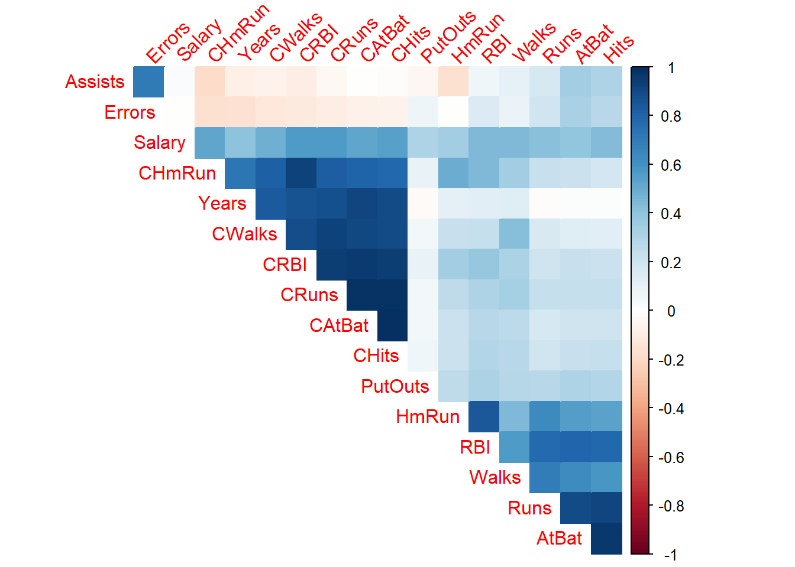
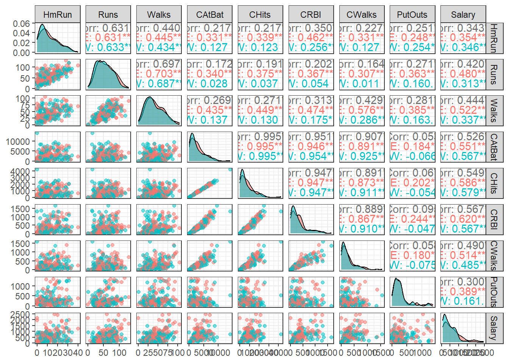
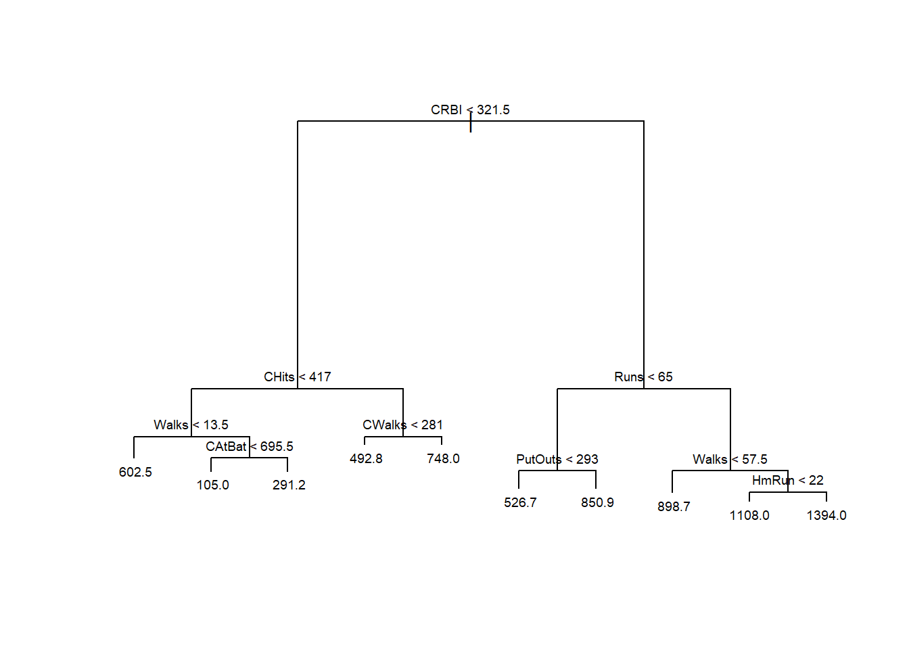
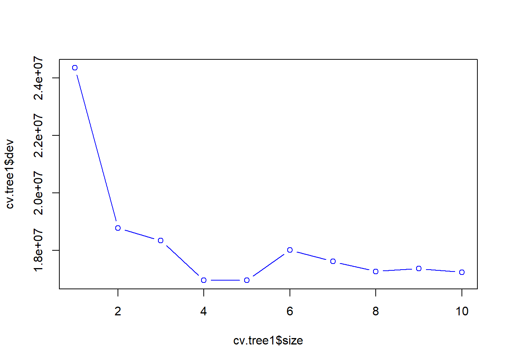
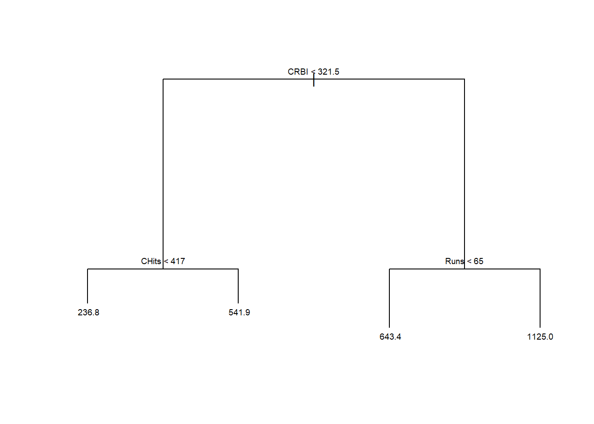

library(ISLR)
library(tree)
library(GGally)
library(randomForest)Laboratório 5
Laboratório 5 - Regressão por árvores de decisão, Bagging e Floresta aleatória
Árvores para regressão
Carregando pacotes.
Carregando base de dados sobre liga de Baseball americana para as temporadas de de 1986 a 1987.
data(Hitters, package = "ISLR")
dados <- na.omit(Hitters)Visualizando dados.
r <- cor(dados[,-c(14,15,20)])
library(corrplot)
corrplot::corrplot(r, method="color",
type="upper", order="hclust",
addCoef.col = NULL, tl.srt=45,
diag=FALSE)
ggpairs(dados[,c(3,4,6,8,9,12,13,16,19)], aes(color = dados$Division, alpha = .2)) + theme_bw()
Sorteando observações de treino.
set.seed(1)
tr <- round(0.5*nrow(dados))
treino <- sample(1:nrow(dados), tr, replace = F)Árvore de regressão para prever o salário do jogador em função das variáveis de desempenho deste.
tree1 <- tree(Salary ~ ., dados, subset = treino)
tree1node), split, n, deviance, yval
* denotes terminal node
1) root 132 23880000 535.4
2) CRBI < 321.5 83 7146000 332.4
4) CHits < 417 57 4386000 236.8
8) Walks < 13.5 5 2917000 602.5 *
9) Walks > 13.5 52 737000 201.7
18) CAtBat < 695.5 25 25600 105.0 *
19) CAtBat > 695.5 27 261100 291.2 *
5) CHits > 417 26 1099000 541.9
10) CWalks < 281 21 803500 492.8 *
11) CWalks > 281 5 32080 748.0 *
3) CRBI > 321.5 49 7521000 879.3
6) Runs < 65 25 2120000 643.4
12) PutOuts < 293 16 835700 526.7 *
13) PutOuts > 293 9 678800 850.9 *
7) Runs > 65 24 2561000 1125.0
14) Walks < 57.5 9 299700 898.7 *
15) Walks > 57.5 15 1523000 1261.0
30) HmRun < 22 7 447300 1108.0 *
31) HmRun > 22 8 770800 1394.0 *Plotando o diagrama da árvore de regressão.
plot(tree1)
text(tree1, cex = 0.6)
metrics <- function(obs, pred) {
RSE <- sum((obs - pred)^2)
SST <- sum((obs - mean(obs))^2)
R2 <- 1 - RSE/SST
MAE <- mean(abs(obs - pred))
RMSE <- sqrt(mean((obs - pred)^2))
return(
data.frame(RMSE = RMSE,
MAE = MAE,
R2 = R2))
}Desempenho do modelo para dados de teste.
pred.teste <- predict(tree1, newdata = dados[-treino,])
metrics(dados$Salary[-treino], pred.teste) RMSE MAE R2
1 351.7751 235.4525 0.4492628Validação cruzada para podar a árvore.
set.seed(3)
cv.tree1 <- cv.tree(tree1)
plot(cv.tree1$size, cv.tree1$dev, type = "b", col = "blue")
prune1 <- prune.tree(tree1, best = 4)
prune1node), split, n, deviance, yval
* denotes terminal node
1) root 132 23880000 535.4
2) CRBI < 321.5 83 7146000 332.4
4) CHits < 417 57 4386000 236.8 *
5) CHits > 417 26 1099000 541.9 *
3) CRBI > 321.5 49 7521000 879.3
6) Runs < 65 25 2120000 643.4 *
7) Runs > 65 24 2561000 1125.0 *plot(prune1)
text(prune1, cex = 0.6)
Avaliando modelo podado.
pred.teste2 <- predict(prune1, newdata = dados[-treino,])
metrics(dados$Salary[-treino], pred.teste2) RMSE MAE R2
1 355.614 238.8978 0.4371771Bagging
O bagging ou bootstrap aggregated faz \(B\) reamostragens dos dados de treino via boostrap e a partir destas estima \(B\) árvores de regressão (ou decisão no caso de aplicações de classificação). O parâmetro mtry consiste no número de variáveis regressoras que serão consideradas em cada particionamento binário recursivo durante a estimativa das árvores. No caso do bagging deve-se considerar mtry=k.
bag <- randomForest(Salary ~ ., dados, subset = treino, mtry = 19,
importance = TRUE, ntree = 500)pred.bag <- predict(bag, newdata = dados[-treino,])
metrics(dados$Salary[-treino], pred.bag) RMSE MAE R2
1 290.8451 185.0709 0.6235237Random Forest
No caso da foresta aleatória deve-se considerar mtry=k/3 para problemas de regressão, sendo sorteadas \(m\) features das \(k\) disponíveis para serem consideradas no particionamento binário recursivo, de forma a “decorrelacionar” as árvores.
rf <- randomForest(Salary ~ ., dados, subset = treino, mtry = 6,
importance = TRUE, ntree = 500)pred.rf <- predict(rf, newdata = dados[-treino,])
metrics(dados$Salary[-treino], pred.rf) RMSE MAE R2
1 298.3872 188.9354 0.6037451Comparando os resultados com regressão linear múltipla
lm1 <- lm(Salary ~ ., dados, subset = treino)
summary(lm1)
Call:
lm(formula = Salary ~ ., data = dados, subset = treino)
Residuals:
Min 1Q Median 3Q Max
-769.77 -177.81 -8.13 149.79 1741.65
Coefficients:
Estimate Std. Error t value Pr(>|t|)
(Intercept) 2.398e+02 1.226e+02 1.956 0.05291 .
AtBat -1.639e-03 9.146e-01 -0.002 0.99857
Hits -2.179e+00 3.727e+00 -0.585 0.55998
HmRun 6.337e+00 9.561e+00 0.663 0.50884
Runs 7.139e-01 4.486e+00 0.159 0.87385
RBI 8.735e-01 3.831e+00 0.228 0.82003
Walks 3.594e+00 2.605e+00 1.380 0.17038
Years -1.309e+01 1.724e+01 -0.759 0.44931
CAtBat -7.136e-01 2.437e-01 -2.928 0.00413 **
CHits 3.316e+00 1.154e+00 2.874 0.00485 **
CHmRun 3.407e+00 2.996e+00 1.137 0.25777
CRuns -5.671e-01 1.140e+00 -0.497 0.61982
CRBI -7.525e-01 1.181e+00 -0.637 0.52512
CWalks 2.347e-01 5.609e-01 0.418 0.67643
LeagueN 1.322e+02 1.176e+02 1.124 0.26350
DivisionW -1.346e+02 5.545e+01 -2.427 0.01682 *
PutOuts 2.099e-01 1.076e-01 1.951 0.05358 .
Assists 6.229e-01 3.026e-01 2.058 0.04189 *
Errors -4.616e+00 6.483e+00 -0.712 0.47796
NewLeagueN -8.330e+01 1.173e+02 -0.710 0.47911
---
Signif. codes: 0 '***' 0.001 '**' 0.01 '*' 0.05 '.' 0.1 ' ' 1
Residual standard error: 297.8 on 112 degrees of freedom
Multiple R-squared: 0.5843, Adjusted R-squared: 0.5137
F-statistic: 8.284 on 19 and 112 DF, p-value: 6.297e-14pred.lm <- predict(lm1, newdata = dados[-treino,])
metrics(dados$Salary[-treino], pred.lm) RMSE MAE R2
1 418.3987 297.1288 0.2208972Pode-se observar que o modelo de regressão múltipla obtido apresentou desempenho mais baixo que todos os estados anteriormente.
Obviamente, há muitas possibilidades para melhorar o modelo de regressão múltipla que não foram consideradas nesta rápida implementação. Por exemplo, as variáveis numéricas não foram escalonadas, pode-se tentar reduzir o modelo com eliminação para trás aplicando a função step. Pode-se testar também os métodos de regessão rígida e LASSO, entre outras possibilidades, como considerar termos de interação e polinomiais. Consegue testar algumas possibilidades?